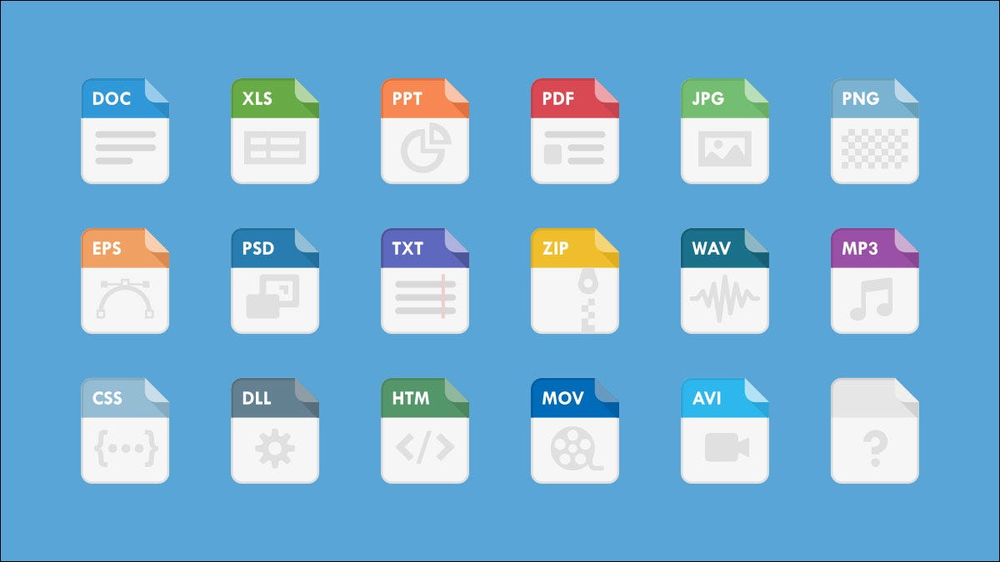
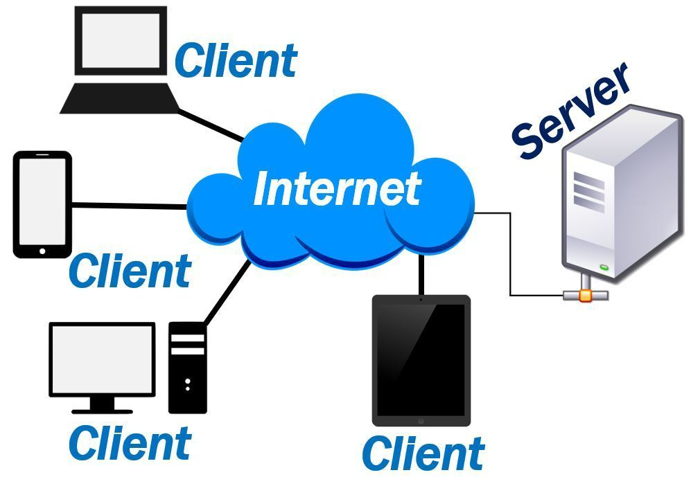
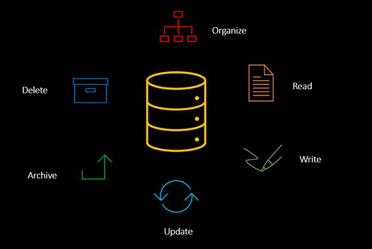
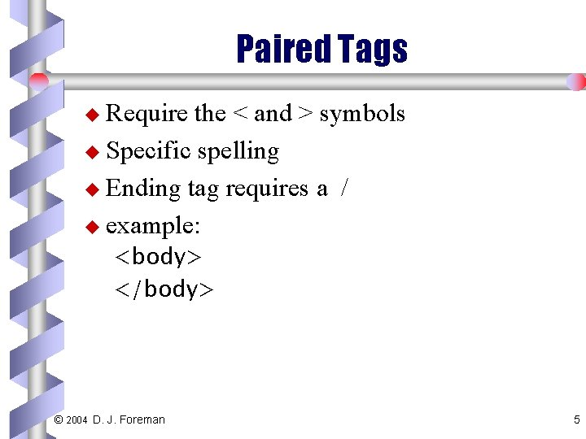
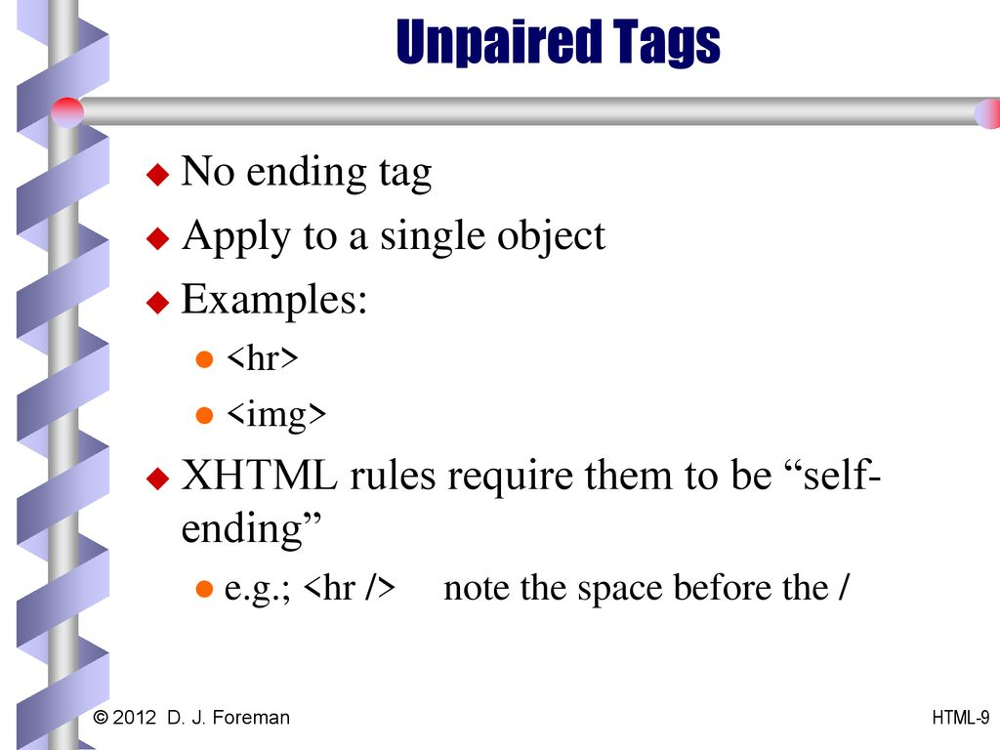
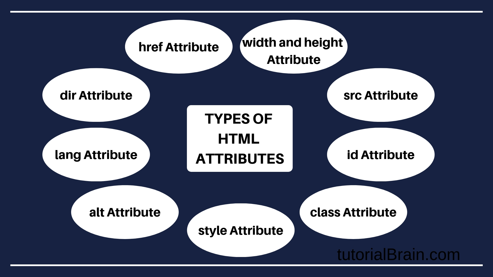
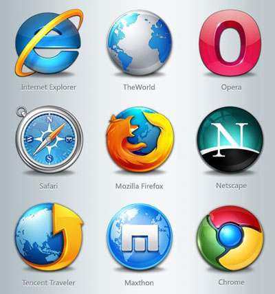

HTML stands for Hyper Text Markup Language.HTML is the standard markup language for creating Web pages.HTML describes the structure of a Web page.HTML consists of a series of elements.HTML elements tell the browser how to display the content.HTML elements label pieces of content such as "this is a heading", "this is a paragraph", "this is a link", etc.

HTTP stands for Hyper Text Transfer Protocol.WWW is about communication between web clients and servers.Communication between client computers and web servers is done by sending HTTP Requests and receiving HTTP Responses.
Hypertext transfer protocol secure (HTTPS) is the secure version of HTTP, which is the primary protocol used to send data between a web browser and a website. HTTPS is encrypted in order to increase security of data transfer. This is particularly important when users transmit sensitive data, such as by logging into a bank account, email service, or health insurance provider.
A file extension, or filename extension, is a suffix at the end of a computer file. It comes after the period and is usually two to four characters long. If you’ve ever opened a document or viewed a picture, you’ve probably noticed these letters at the end of your file.
File extensions are used by the operating system to identify what apps are associated with what file types—in other words, what app opens when you double-click the file. For example, a file named “awesome_picture.jpg” has the “jpg” file extension. When you open that file in Windows, for example, the operating system looks for whatever app is associated with JPG files, opens that app, and loads the file.
The term file transfer protocol (FTP) refers to a process that involves the transfer of files between devices over a network. The process works when one party allows another to send or receive files over the internet. Originally used as a way for users to communicate and exchange information between two physical devices, it is now commonly used to store files in the cloud, which is usually a secure location that is held remotely.
FTP may be used by a business or individual to transfer files from one computer system to another or by websites to upload or download files from their servers.
HTML tags are like keywords which defines that how web browser will format and display the content. With the help of tags, a web browser can distinguish between an HTML content and a simple content. HTML tags contain three main parts: opening tag, content and closing tag. But some HTML tags are unclosed tags.
When a web browser reads an HTML document, browser reads it from top to bottom and left to right. HTML tags are used to create HTML documents and render their properties. Each HTML tags have different properties.
An HTML file must have some essential tags so that web browser can differentiate between a simple text and HTML text. You can use as many tags you want as per your code requirement.
All HTML tags must enclosed within < > these brackets.Every tag in HTML perform different tasks.If you have used an open tag, then you must use a close tag (except some tags).

A server is a computer program or device that provides a service to another computer program and its user, also known as the client. In a data center, the physical computer that a server program runs on is also frequently referred to as a server. That machine might be a dedicated server or it might be used for other purposes.
In the client/server programming model, a server program awaits and fulfills requests from client programs, which might be running in the same, or other computers. A given application in a computer might function as a client with requests for services from other programs and as a server of requests from other programs.
The term server can refer to a physical machine, a virtual machine or to software that is performing server services. The way that a server works varies considerably depending on how the word server is being used.
A physical server is simply a computer that is used to run server software. The differences between a server and a desktop computer will be discussed in detail in the next section.
A database is a data structure that stores organized information. Most databases contain multiple tables, which may each include several different fields. For example, a company database may include tables for products, employees, and financial records. Each of these tables would have different fields that are relevant to the information stored in the table.
Nearly all e-commerce sites uses databases to store product inventory and customer information. These sites use a database management system (or DBMS), such as Microsoft Access, FileMaker Pro, or MySQL as the "back end" to the website. By storing website data in a database, the data can be easily searched, sorted, and updated. This flexibility is important for e-commerce sites and other types of dynamic websites.
In a nutshell, SQL is a language for querying databases and MySQL is an open source database product.
SQL is used for accessing, updating and maintaining data in a database and MySQL is an RDBMS that allows users to keep the data that exists in a database organized.
SQL does not change (much), as it is a language. MySQL updates frequently as it is a piece of software.
In layman's terms, SQL could be seen as a bank teller and MySQL could be seen as the bank. You need the bank teller (SQL) to communicate with the bank (MySQL) and you need the bank to manage the money (the data). They work in tandem but they are completely different.

* PHP is an acronym for "PHP: Hypertext Preprocessor".
* PHP is a widely-used, open source scripting language.
* PHP scripts are executed on the server.
* PHP is free to download and use.

A programming language is a vocabulary and set of grammatical rules for instructing a computer or computing device to perform specific tasks. The term programming language usually refers to high-level languages, such as BASIC, C, C++, COBOL, Java, FORTRAN, Ada, and Pascal.
Paired tags are a set of two tags with the same name. In each Paired tag set, one is an opening tag, and the other one is the closing tag. The closing tag has a / slash, it means that the tag is closed now. It is necessary to close a paired tag; otherwise, it can result in the malfunctioning of the website.
Unpaired tags are single tags with no closing tag. These tags are also called Singular Tags. These are also called non-container tags because they do not contain any content. It is recommended to close the unpaired/singular tags also.
* All HTML elements can have attributes.
* Attributes provide additional information about elements.
* Attributes are always specified in the start tag.
* Attributes usually come in name/value pairs like: name="value".
A browser is an application program that provides a way to look at and interact with all the information on the World Wide Web. This includes Web pages, videos and images. The word "browser" originated prior to the Web as a generic term for user interfaces that let you browse (navigate through and read) text files online. Many people will use web browsers today for access to the internet and is seen almost as a necessity in how many navigate their daily life.
A Web browser is a client program that uses HTTP (Hypertext Transfer Protocol) to make requests of Web servers throughout the Internet on behalf of the browser user. Most browsers support e-mail and the File Transfer Protocol (FTP), but a Web browser is not required for those Internet protocols and more specialized client programs are more popular.
